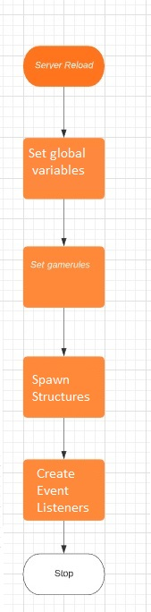
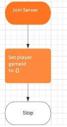
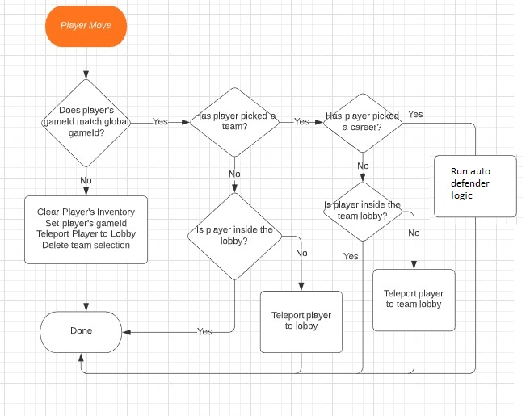
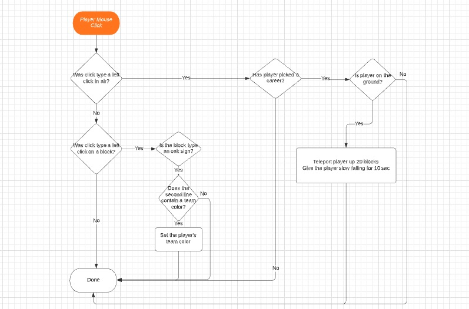
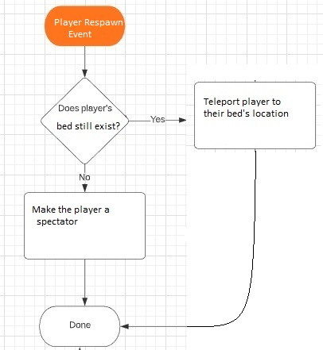
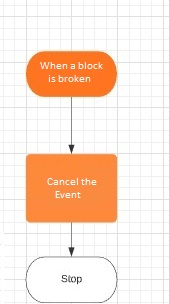

Generic Game Design (for Team Game)
Reload Event

Join Server Event

Player Move Event

Player Mouse Click Event

Player Respawn Event

Block Break Event

Projectile Hit Event
Get pointer to projectile
Get the type of the projectile
Get distance from event location to lobby location
if the type of the projectile is a snowball then
if the distance from the event location to the lobby location is less than 50 blocks then
Send a message to the server console: No explosions allowed near the lobby
else
Create an explosion with size = 1 to the projectile hit location